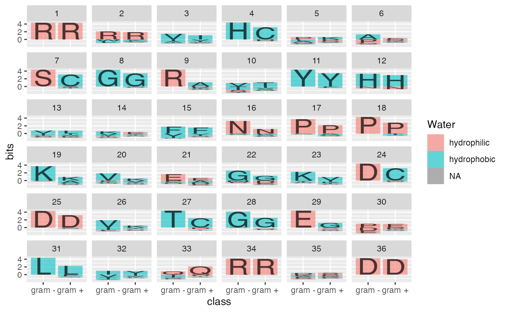

R/position.r
position_logo.Rdposition_classic is stacking objects in an ordered fashion from largest to smallest element,
position_logo reverses the classic order and additionally shifts stacks downward to align the largest objects along their vertical minimum,
position_fill additionally standardises each stack to have unit
height.
position_logo() position_classic()
See geom_logo for
more examples.
library(ggplot2) data(sequences) # to make the most of comparisons, largest letters ar aligned along their minimum to # work out the main sequence. ggplot(data = ggfortify(sequences, peptide, treatment = "class")) + geom_logo(aes(x = class, y = bits, fill = Water, label = element), position="logo") + facet_wrap(~position)# in the classic logo plots letters are stacked in an ordered fasahion on top of each other ggplot(data = ggfortify(sequences, peptide, treatment = "class")) + geom_logo(aes(x = class, y = bits, fill = Water, label = element), position="classic") + facet_wrap(~position)